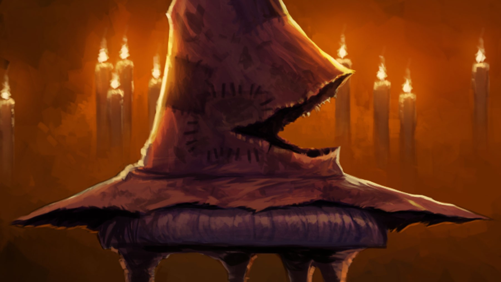

The Sorting Hat is the old, patched wizard’s hat that sorts every new student at into one of its four houses: , , and . It once belonged to Godric Gryffindor, and the four founders of the school put their own judgment into it, so that it could go on choosing for them after they were gone. Every year it sings a new song before the Sorting, and it keeps the founder’s sword for any true Gryffindor who needs it.
In 1991 it sorted ’s year, weighing Slytherin for Harry before it called Gryffindor, and making the first Weasley in living memory outside Gryffindor., “The Sorting” It brought Harry the sword in the Chamber of Secrets, and at the Battle of Hogwarts Voldemort set it alight on ’s head. Neville drew the sword out of the flames, and the Hat survived., “The Last Stand”
Description

The Hat is a tall, pointed wizard’s hat, so old and so often mended that it is more patches than hat, frayed at the brim and none too clean. Its rips and tears suggest a face. The largest, near the brim, opens like a mouth when it speaks, and it speaks in a loud, rasping voice that carries to every corner of the Great Hall. It is expressive for a hat: it shifts and slumps and seems to frown while it thinks.
On the night of the Sorting it waits on a stool before the High Table, under the floating candles. The rest of the year it sits on a shelf in the headmaster’s office.
Nature
The Sorting
Placed on a first-year’s head, the Hat reads their thoughts, their mind and what it calls their soul, and weighs them against the qualities each founder prized: Gryffindor’s courage, Hufflepuff’s loyalty, Ravenclaw’s wit and Slytherin’s ambition. Its deliberations are private. The student hears it think aloud inside their own head, and the hall hears nothing until it calls out the house.
Some students take a moment. was sorted the instant the Hat touched his head. Others take far longer: it thought over for nearly a minute, and over for more than two.
Its own judgment
The Hat listens to every argument, but the choice is its own, and a student’s wish almost never counts. Minerva McGonagall warns each new year of it before the ceremony: their hopes will only get them so far. In 1991 , called Hufflepuff, asked it aloud whether it was sure, and what about Gryffindor. The Hat only repeated its answer.
argued with it out loud, insisting she was destined for Slytherin, and after a long pause it put her there. Whether hers was one of the rare wishes that counted, or whether it had meant Slytherin all along, the Hat never said. Harry Potter made no wish at all. The Hat wondered about Slytherin for him, thought better of it, and called Gryffindor on its own.
Who they might become
Some who have worn the Hat believe it sees not only who a student is but who they might become, and sorts them by that: the brave child who is not brave yet, the loyal one who has not yet been tested. Its own song of 1991 promised the first-years that they would “learn and grow wiser / To become something new.” The Hat has never said whether it sees anything of the kind. Those who believe it point to the sortings that looked like mistakes at the time.
The songs
Before each Sorting the Hat sings a song of its own making, a new one every year: about the founders and their houses, and sometimes about the state of the school itself. In 1995 it broke with that custom altogether and sang a warning., “The Return” The recorded songs are listed under Songs, below.
The sword of Gryffindor
The Hat also keeps the goblin-made sword of Godric Gryffindor, after a fashion. The sword comes out of the Hat to whoever needs it and has the courage to draw it, a working of ancient magic that answers to need. It has come to two students in living memory: to Harry Potter in the Chamber of Secrets, and to Neville Longbottom at the Battle of Hogwarts., “What is needed, and what is meant”
History
Origin
The Hat was Godric Gryffindor’s own. When the four founders of Hogwarts wondered who would choose their students once they were gone, Gryffindor took it from his head, and all four put something of their judgment into it, so that it could choose as they would have chosen. It has sorted every student since. The Hat’s songs remember the founders as friends who came together from distant lands, and remember what each of them prized. Its place among the castle’s own enchantments makes it one of the oldest workings of still in use.
The Sorting of 1991
On the first night of Harry Potter’s first year, Professor Quirrell set the Hat on its stool, and it greeted a hall of terrified first-years by telling them it was not that horrid and to calm themselves at once. Then it sang: of the four founders and their houses, of the friends they had been, and of the promise that when the houses united there was no greater key.

It put in Ravenclaw after nearly a minute, and in Gryffindor at once. sat under it for over two minutes while the hall began to whisper, turning red as she demanded to know whether it was going to put her in Slytherin or not, then crying out that she was destined for it. Whatever else it had considered for her, the Hat called Slytherin at last, and she bowed to her new house with it still in her hand.
To it found courage in abundance, a good mind and loyalty too, and, as great as any of them, a thirst to prove himself. It wondered about Slytherin, thought better of it, and called Gryffindor to the loudest cheer of the night. came near the end, and the Hat took only a moment before calling Hufflepuff. The hall fell silent; Ron asked if it was sure, and it was. At the feast that followed, Harry crossed the hall to sit beside him at the Hufflepuff table, an hour after the Hat had sung that the houses were stronger together.
The Chamber of Secrets (1992)
Alone in the Chamber with the basilisk in his second year, Harry heard the song of Dumbledore’s phoenix, Fawkes. The phoenix brought him the old Sorting Hat and blinded the serpent, and out of the Hat Harry drew a gleaming, goblin-made sword., “The Chamber”
Afterward Harry was afraid he belonged in Slytherin after all. The Hat had weighed it for him, he could speak to snakes, and Tom Riddle had said they were alike. Dumbledore answered that the Hat could have sent him to Slytherin and had chosen Gryffindor, and that only a true Gryffindor could have drawn that sword from it., “Aftermath”
The quarrel (1994)
The Hat’s song at the start of Harry’s fourth year told of the founders who had built the school together, and of the quarrel that broke them apart., “The Tournament”
The warning (1995)
A year later, with Voldemort returned and the Ministry denying it, the Hat broke with its custom. Instead of praising the houses, it warned them that the founders had built the school together, and that a school divided against itself would not stand.
The Battle of Hogwarts (1998)

When Voldemort brought Harry’s body out of the forest, Neville Longbottom was the first to stand against him. Voldemort set the Sorting Hat on Neville’s head and set it on fire. Neville drew the sword of Gryffindor out of the flames, the sword coming to the Hat as it always had for whoever needed it, and with one stroke cut off the head of Voldemort’s snake, the last of his Horcruxes.
The Hat survived, scorched at the brim. That September, with the castle rebuilt, Minerva McGonagall set it back on its stool, and it sorted the new first-years as it always had.
Songs
The Hat writes a new song every year. Only three are recorded.
- 1991: the four founders as friends from distant lands, one verse for each house, ending on the houses united.
- 1992, 1993: not recorded.
- 1994: the founders who built the school together, and the quarrel that broke them apart.
- 1995: a warning, breaking with custom, that a school divided against itself would not stand.
- 1996 onward: not recorded.
Of the 1991 song, the verse for Hufflepuff is the one most often remembered, since its first test came the same night:
Her house stands
For those who remain
When all else would abandon
Someone in pain.
It ended:
Though many will worry
What their impact will be,
When houses unite
There is no greater key.
Notable Sortings
All five took place on the first night of the 1991 school year.
- (1991): Ravenclaw, after nearly a minute.
- (1991): Gryffindor, at once.
- (1991): Slytherin, after more than two minutes, arguing aloud.
- (1991): Gryffindor, with Slytherin weighed and set aside.
- (1991): Hufflepuff, the first Weasley in living memory outside Gryffindor.
Related magic
- : the Hat is one of the castle’s own enchantments, and the sword it gives answers to need.
- : the Mirror reads the heart and shows what it wants; the Hat reads it and decides what it is. A wish moves neither.
- : the sword the Hat gave Neville killed the last of them.
Etymology
The Hat is named for its one task. To “sort” is to divide into kinds, from the Latin sors, “lot” or “fate”, the same root as the lots once drawn to decide a person’s portion. A student’s house is the lot the Hat draws for them.
Changes from Canon
- The 1991 song is original to this continuity. It sings of the founders as friends and ends on the houses uniting.
- A student’s wish almost never counts. Harry does not ask to be kept out of Slytherin; the Hat chooses Gryffindor on its own.
- Hermione is sorted into Ravenclaw and Ron into Hufflepuff. Neville is sorted at once rather than after a long wait, and Dracaena’s Sorting is the longest of her year.
- The Hat is shown to survive the Battle of Hogwarts and to sort the first-years of 1998.
Appearances
Trivia
- Ron Weasley was the only first-year of 1991 to question his verdict aloud.
- The Hat took over two minutes with Dracaena Malfoy, the longest of her year, and seemed to consider something other than Slytherin for her.
- Neville Longbottom, the student it sorted fastest in 1991, was the one who drew the sword from it at the Battle of Hogwarts.
- The sword came to the Hat for Neville though the goblin Griphook had taken it from Gringotts only hours before.
- Ron, refused Gryffindor, saw himself in Gryffindor scarlet in the Mirror of Erised that Christmas. By the end of his fourth year he was sure Hufflepuff was where he belonged.
- The two students the Hat weighed longest against their houses in 1991, Harry and Dracaena, ended the war with her hand over his on the final spell, one of each founder’s houses behind it.
Behind the scenes
- The infobox picture is a crop of official art from the Harry Potter website, also used in full as the banner of .
- In the books the Hat sings a new song every year, but only three are heard: in the first, fourth and fifth books. The Archive keeps the same three. The 1991 song was written for this continuity; the 1994 and 1995 songs follow canon and are summarized here rather than quoted.